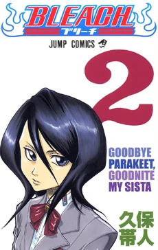

Bleach adalah manga yang sama yang dibuat oleh Titie Kubo dan bergenre
Volume pertama manga Bleach dalam bahasa Inggris dirilis pada 6 Juli 2004.
Pada Volume pertama dikisahkan bahwa karakter utama Ichigo Kurosaki selalu bisa melihat hantu, tetapi kemampuan ini tidak mengubah hidupnya sebanyak pertemuan dekatnya dengan Rukia Kuchiki , seorang Shinigami dan anggota Soul Society yang misterius . Saat melawan Hollow , roh jahat yang memangsa manusia yang menunjukkan energi psikis, Rukia mencoba meminjamkan Ichigo sebagian kekuatannya sehingga dia bisa menyelamatkan keluarganya; tetapi yang sangat mengejutkannya, Ichigo menyerap setiap energinya. Sekarang menjadi Shinigami penuh, Ichigo dengan cepat mengetahui bahwa dunia yang dia huni adalah dunia yang penuh dengan roh-roh berbahaya dan, bersama dengan Rukia - yang perlahan-lahan mendapatkan kembali kekuatannya - tugas Ichigo adalah melindungi yang tidak bersalah dari Hollow dan membantu para roh itu sendiri menemukan kedamaian.
volume 2 dirilis pada 3 agustus 2004
Segera setelah memeriksakan diri ke Klinik Kurosaki dengan bekas luka misterius di punggungnya, Yasutora Sado yang berotot menghilang begitu saja. Bersama Sado ada burung parkit yang bisa berbicara yang dijiwai oleh jiwa seorang anak laki-laki bernama Yūichi . Tidak butuh waktu lama bagi Shinigami pemula Ichigo Kurosaki untuk menduga bahwa Hollow pasti terlibat--roh terkuat yang pernah dihadapinya hingga saat ini. Ichigo akan menemukan bahwa tidak semua jiwa terikat pada Soul Society, terutama jika jiwa itu tercemar oleh darah yang tidak bersalah.
RANGKUMAN
Referensi